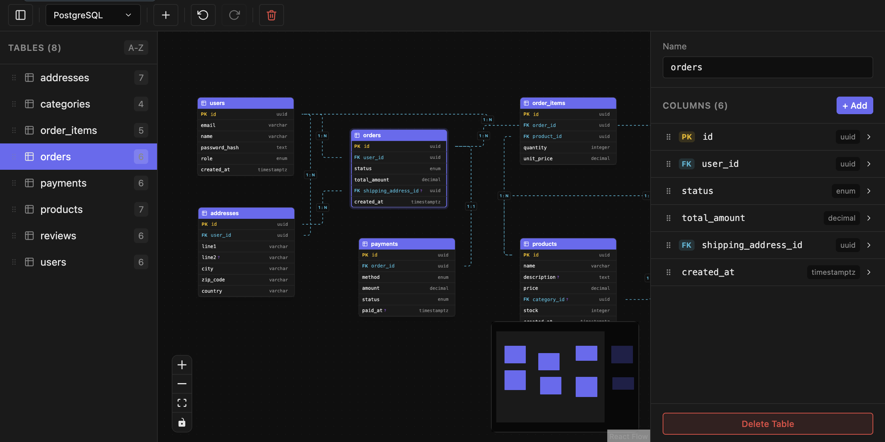

Design database schemas,
visually.
Draw tables and relationships on an interactive canvas. Import & export SQL across PostgreSQL, MySQL, and SQLite. Let AI assistants build diagrams for you through MCP.
Free · Open in VS Code, Cursor, VSCodium & more · macOS app signed for Apple Silicon

Everything you need to model data
From a blank canvas to production SQL — and an AI that speaks your schema.
Visual ERD canvas
Drag-and-drop tables, pan and zoom across large schemas, and navigate with a minimap on an interactive canvas.
SQL import / export
Turn existing DDL into diagrams instantly, and export back to SQL with constraints, indexes, and defaults intact.
Multi-dialect
PostgreSQL, MySQL, and SQLite. Switch dialects anytime — column types convert automatically.
Rich table editor
Set types, toggle PK / nullable / unique, configure defaults and comments, and reorder columns by dragging.
Relationships
Draw foreign keys between columns, set cardinality (1:1, 1:n, n:m) and cascade rules with a visual editor.
AI / MCP integration
A built-in Model Context Protocol server lets Claude, Cursor, and more create and edit your diagrams programmatically.
Frequently asked questions
Quick answers about wanderd, the visual ERD editor.
What is wanderd?
wanderd is a free visual Entity-Relationship Diagram (ERD) editor for VS Code, Cursor, and macOS. You design database schemas on an interactive canvas and store them as human-readable .wand JSON files.
Is wanderd free?
Yes. wanderd is free to use as a VS Code / Cursor extension and as a standalone macOS desktop app.
Which databases does it support?
wanderd supports PostgreSQL, MySQL, and SQLite. Switch dialects anytime — column types are converted automatically when you export SQL.
Can I use wanderd in Cursor?
Yes. wanderd is on the Open VSX Registry, so it installs in Cursor, VSCodium, Kiro, and other VS Code–compatible editors.
How do I install it in VS Code?
Open the Extensions panel (Ctrl/Cmd+Shift+X), search for “wanderd”, and click Install — or install from the VS Code Marketplace listing.
Does it run on macOS?
Yes. A signed standalone desktop app for Apple Silicon Macs is available as a .dmg download from GitHub releases.
What is the AI / MCP integration?
wanderd ships a built-in Model Context Protocol (MCP) server, so AI assistants like Claude and Cursor can create, read, and edit your ERD diagrams programmatically.
What is a .wand file?
A .wand file is wanderd’s document format: human-readable JSON storing tables, columns, relationships, indexes, and canvas layout — producing clean diffs for version control.
Start designing in seconds
Install the extension, or grab the desktop app for macOS.